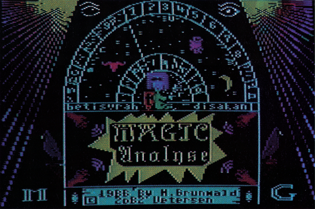
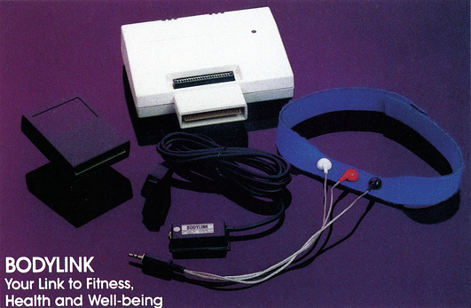

Programme für Hobby und Freizeit
Der C 64 läßt sich zu mehr als zum Spielen, Programmieren und zur geschäftlichen Anwendung einsetzen. Das Angebot für die private Anwendung beweist es. Interessantes gibt es aus den USA zu berichten.
Im direkten Vergleich mit den Vereinigten Staaten ist das Heim-Softwareangebot für den C 64 in der Bundesrepublik noch recht klein. So werden dort Programme angeboten, die sicherlich auch auf dem deutschen Markt Renner werden könnten, würde sich ein Anbieter finden. Bevor wir jedoch einen Blick über den Atlantik werfen, schauen wir uns zuvor das Angebot der privaten Anwendungen auf dem hiesigen Markt an.
Klammert man Spiele, Programmiersprachen, Hilfsprogramme (Utilities) und professionelle Anwendungsprogramme, wie die Textverarbeitung, Tabellenkalkulation sowie universelle Datenbankprogramme aus, so bleibt das Angebot für den privaten Einsatz. Hier ist es sinnvoll, weitere Unterteilungen vorzunehmen.
Hilfe in allen Lebenslagen
Eine Kategorie, die besonders beliebt ist, sind Lernprogramme. Vor allen Dingen Sprach- beziehungsweise Vokabeltrainer finden überall in der Welt reges Interesse. Der Computer kann aber auch durch geeignete Software den Schreibmaschinen- oder Morsekurs ersetzen, in jedem Fall kann man aber fast jedes Wissensgebiet sehr gut vorbereiten und üben. Selbst wenn Sie davon träumen, eines Tages einen Flugschein zu machen, können Sie mit einem Flugsimulator eine Piper oder auch eine Boeing vom häuslichen Schreibtisch aus fliegen. Diese Kategorie von Simulationsprogrammen wird häufig bereits der Unterhaltungs- und Spiel-Software zugeordnet, da sie neben dem Lerneffekt auch viel Freude bereitet.
Viele Hobbies und häusliche Arbeiten erfordern den Einsatz von Karteikarten oder noch besser: den Einsatz eines spezialisierten Dateiverwaltungsprogramms. Spezialisiert, weil es auf die konkreten Bedürfnisse dieser Anwendung abgestimmt sein sollte. Sicherlich ist es auch möglich, Kochrezepte, Briefmarken- oder Münzensammlungen mit einem universellen Datenbankprogramm zu verwalten. Aber es ist häufig einfacher und bequemer, ein bereits bestehendes, auf die persönlichen Bedürfnisse abgestimmtes Programm einzusetzen.
Wenn Sie erst in Ihren Büchern nachschlagen und suchen müßten, um herauszufinden wann der nächste Versicherungsbeitrag oder eine andere unregelmäßige Zahlung fällig wird, ist es höchste Zeit für ein leistungsfähiges Haushaltsbuch. Denn es ist wesentlich leichter, mit einem solchen Finanzplanungsprogramm zu arbeiten, als alles von Hand zusammenzustellen und zu errechnen. Sie behalten immerden Überblick über alle Ein- und Ausgänge Ihres Privatkontos. Monate, in denen gleichzeitig mehrere unregelmäßige Zahlungen fällig werden und das Konto mehr als gewöhnlich belasten, können hiermit früh erkannt werden. Ihre Ausgaben können bei guten Programmen tage-, monats- und jahrweise aufgelistet und ausgedruckt werden. Hierbei können Sie die verschiedenen Konten (zum Beispiel Auto, Lebensmittel, Kleidung) für sich allein und im Zusammenhang mit den anderen Konten betrachten. Wer längere Zeit mit einem elektronischen Haushaltsbuch gearbeitet hat, wird es nicht mehr missen wollen. Wenn Sie Ihre privaten Finanzen bisher handschriftlich verwaltet haben, wird es für Sie ein leichtes sein, auf den Computer umzusteigen.
Magie- und Psychotests
In der heutigen Zeit, in der der Verstand die Welt regiert, gewinnen gleichzeitig alte Überlieferungen, Mysterien und die Magie wieder an Bedeutung, obwohl sich dies scheinbar widerspricht. So ist es auch nicht verwunderlich, daß man diesem Trend auch bei Computer-Programmen Rechnung trägt. Wer sich zum Beispiel für Astrologie interessiert und Entscheidungen nach seinem Horoskop fällt, kann den C© 64 für die anfallenden umfangreichen Berechnungen einsetzen.
So gibt es auch auf dem deutschen Software-Markt Programme, die zum Beispiel den Stand der Sternbilder und der für die Deutung wichtigen Planeten und Sonnen an jedem Ort und für jede Zeit berechnen. Ohne Computer wären Sie gezwungen, umfangreiche und teuere Tabellenwerke (Ephemeriden) zu durchsuchen. Ähnliches, nur in einer anderen, mehr wissenschaftlicheren Darstellungsform, liefern Astronomieprogramme, wobei hier alle sichtbaren Sterne des nächtlichen Himmels auf dem Bildschirm dargestellt werden.
Wer sich mit Magie beschäftigt und zu seiner Lebensphilosophie gemacht hat, kennt sicherlich auch die althebräischen Zahlen-Kabbala. In dieser Geheimlehre wird jedem Buchstaben des (hebräischen) Alphabets ein Zahlenwert zugeordnet. Ein Wort besteht somit aus einer Reihe von Zahlen. Hieraus läßt sich eine Quersumme bilden, die den Charakter des gesamten Wortes widerspiegelt. Wörter oder Namen beziehungsweise Personen mit gleicher Quersumme sind artverwandt und stehen miteinander in Beziehung. So kann man seine Charakterzüge, Glückszahlen und -steine und vieles mehr vom C 64 berechnen lassen, da der Charakter und das Karma eines jeden Menschen, dieser esoterischen (Esoterik = Geheimlehre) Wissenschaft zur Folge, durch den Namen und das Geburtsdatum bestimmt werden kann (Bild 1).

Die Kategorie von Psycho-, Magietest- und AÄstrologieprogrammen muß zum Teil der Unterhaltungs-Software zugerechnet werden. Der Aussagewert der gelieferten Ergebnisse derartiger Programme hängt von der Sorgfalt und der Fachkompetenz des Programmautoren ab. Einige Tests sind letztlich mehr als Partyspaß zu betrachten, denn als eine seriöse Anwendung.
Gewinnen mit System
Lotto und Fußball-Toto gehören für viele Bundesbürgerzumtäglichen Alltag. Die meisten Teilnehmer verlassensich beim Lotto auf Glück und Intuition. Andere versuchen es mit System und berücksichtigen die statistischen Häufigkeiten der bisher gezogenen Zahlen. Es gibt mittlerweile auch für diese Anwender Programme, in denen der Computer die am häufigsten gezogenen Zahlen berücksichtigt und hieraus Tippvorschläge ermittelt. Sogar eine Gewinngarantie wird teilweise gegeben.
Beim Toto trägt weniger das Glück, als viel mehr die Erfahrung beim Tippen von Ergebnissen der Fußball-Bundesliga zum Gewinnen bei. Unterstützung findet der Tipper in Programmen, die die Bundesligaspiele verwalten und so eine Reihe zusätzliicher Information bereitstellen.
Gesundheit und Sportlichkeit sind unserer Gesellschaft wichtiger denn je und werden von vielen Menschen auch wichtig genommen. Der C 64 kann Ihnen auch hier helfen, Ihr körperliches Wohlbefinden und Ihre Kondition zu steigern. Empfehlenswert sind zum. Beispiel Diätprogramme zur Berechnung der Kalorienzahl von Speisen. Sie ermöglichen so eine Reduzierung des Körpergewichts und die Erstellung eines ausgewogenen Menüs, das alle lebenswichtigen Bestandteile in der richtigen Zusammensetzung enthält.
In den Vereinigten Staaten gibt es sogar ein Fitness-Paket, das aufeine raffinierte Artund Weise dazu beiträgt, den Körper gesundzuhalten und optimal zu trainieren. Dieses Paket trägt den Namen »Bodylink«, das neben der Software einige notwendige Hardware-Erweiterungen für den © 64 beinhaltet.
Trimm dich mit dem C 64
Die Technologie, die mit diesem Paket verbunden ist, nennt sich Bio-Feedback und ist äußerst effektiv. Vom Körper ausgesendete Signale (zum Beispiel Blutdruck, Körpertemperatur, Puls und die Größe bestimmter Blutgefäße) werden mit Hilfe spezieller Analog-/Digital-Wandler an den Computer übermittelt, der diese in einer symbolischen Form auf den Bildschirm weiterleitet oderin einer anderen Weise weiterverarbeitet. Erfolge mit dieser Technik wurden beispielsweise auch in Deutschland bei der Therapie von Migräne-Patienten erzielt. In diesem Fall wurde die Größe der für Migräneanfälle verantwortlichen Schläfen-Arterie mit einem geeigneten Sensor kontinuierlich gemessen und auf dem Bildschirm angezeigt. Die Aufgabe der Patienten ist es, die Arterie durch Willensanstrengung zu verengen und somit zu kontrollieren. Auf diese Weise kann die Ursache der Migräneanfälle beherrscht und ohne Medikamente selbst therapiert werden. Die Technik zeigt Übereinstimmungen mit der des autogenen Trainings, mit dem Unterschied, daß bei dieser Art der Körperbeeinflussung durch Autosuggestion eine kontinuierliche Kontrolle möglich ist. Beim Bio-Feedback werden erste Erfolge sofort sichtbar und ermöglichen eine Fortsetzung dieser Willenshandlung auf dem richtigen Weg. Ohne Kontrollmechanismus würde man erst dann einen Erfolg feststellen, wenn es gelungen ist, die Ursache der Schmerzen vollständig auszuschalten. Bis dahin kann es jedoch ein weiter Weg sein.
Bodylink nutzt die Technik des Bio-Feedbacks zur Kontrolle bei einer Reihe beliebter Sportarten, wie Aerobic oder Bodybuilding. Beim Aerobic wird beispielsweise der Pulsschlag auf den Bildschirm gebracht und kann somit ständig abgelesen und kontrolliert werden. Abhängig vom Alter, Geschlecht und der eigenen Kondition gilt es, eine optimale Pulsratezuerreichen und zuhalten. Am Ende zeigt der C 64 die genaue Anzahl der verbrauchten Kilokalorien an. Body Link verhindert also gefährliche Überanstrengungen, die bei jeder Sportart möglich sind und zu Herz- und Kreislaufschäden führen können.
Wer seinen Körper durch Bodybuilding oder Fitness stärken will, kann dies mit einer Bio-Feedback-Übungsmaschine tun, die den Namen »COME!I« (COmputerized Muscle Exerciser and Trainer = Computergestützter Muskeltrainer) trägt. Die Aufgabe ist es, durch Dosierung der aufgewendeten Kraft, einen auf dem Bildschirm dargestellten Hubschrauber vom Boden zu erheben. Wendetmanzuwenig Kraft auf, stürzt dieser ab. Durch diese Übungen ist es möglich, die Bauch-, Brust-, Rücken-, Bein-, und Armmuskulatur auf sehr motivierende und unterhaltsame Weise zu stärken. Die Idee, die aufgewendete Kraft des Anwenders auf eine Ubungsmaschine, gewissermaßen als Joystick-Steuerung in einem Computerspiel, zu verwenden ist genial. Hier sind viele Aufgaben in Spielen denkbar, die nicht nur durch Schnelligkeit und Geschicklichkeit, sondern auch durch dosierbare zielgerichtete Kraft zu lösen sind.
Zu dem Bodylink-Paket gehört weiterhin ein Programm zur Verbesserung der Koordination zweier beliebiger Muskeln sowie ein Programm zur Muskelentspannung und Streßreduzierung. Entspannung des Körpers ist genauso trainierbar wie die Konzentration.
Bodylink ist nicht ganz billig. Jeder Programmteil muß einzeln zum Preis zwischen 39,35 Dollar (EMG-Muskel-Sensor) und 209,95 Dollar (Streß-Reduzierungs-Paket) erworben werden. Das Paket zur Muskelkoordination (Bild 2) kostet zum Beispiel 139,95 Dollar. Leider sind derartige Programme für den C 64 (noch) nicht in der Bundesrepublik erhältlich. Aber Geräte, wie Blutdruck- und Pulsmesser oder elektronische Fieberthermometer, dieschneller und bequemer als ihre quecksilberhaltigen Vorbilder arbeiten, wären sicherlich auch in Deutschland gefragt.

Abhöranlage C 64
Der C 64 eignet sich nicht nur hervorragend, um Körperfunktionen zu kontrollieren, sondern auch um Häuser und Wohnungen zu überwachen oder zum Beispiel Einbrecher von leerstehenden Wohnungen während der Urlaubszeit fernzuhalten. So werden in Amerika Geräte angeboten, die beispielsweise den Fernseher, das Radio und das Licht programmgesteuert ein- und ausschalten und soreges Leben in leeren Wohnungen vortäuschen. Programmieren lassen sich diese Steuerungsanlagen zum Beispiel auch mit einem C 64.
Wenn Sie an Ihrem Radio auf dem Kurzwellenband Sender einzustellen versuchen, werden Sie häufig Frequenzen finden, an denen ausschließlich Pfeiftöne oder Morsesignale zu hören sind. Die meisten dieser Frequenzen senden Informationen, Nachrichten in codierter Form, an bestimmte Empfänger. Wer wissen will, was der Inhalt dieser Nachrichten ist, kann sie mit einem Modul für den C 64 entschlüsseln. Leider ist dieses Modul bisher lediglich in Amerika erhältlich. Es nennt sich »Short-Wave Listener« (Kurzwellen-Abhörer) und entschlüsselt sowohl Morsesignale als auch andere digital übermittelten Daten und bringt sie in lesbarer Form auf den Bildschirm. Das Modul wird zum Betrieb lediglich in den Expansion-Port gesteckt und mit einem Kabel an den Kopfhörer- oder Lautsprecheranschluß des Radioempfängers verbunden. Sie können zwar auf die Mitteilungen nicht antworten, hierzu benötigten Sie einen eigenen Kurzwellen-Sender, aber auch das Abhören der Nachrichten von Wetterstationen, Presse-Agenturen und Schiffssendern kann interessant und aufregend sein.
(nj)Body Link: Bodylog Inc., 34 Maple Avenue, Armonk, NY 10504, USA
Magie Test: Mükra Datentechnik, Schöneberger Str. 5, 1000 Berlin 42, Tel. 030/75291 50/60